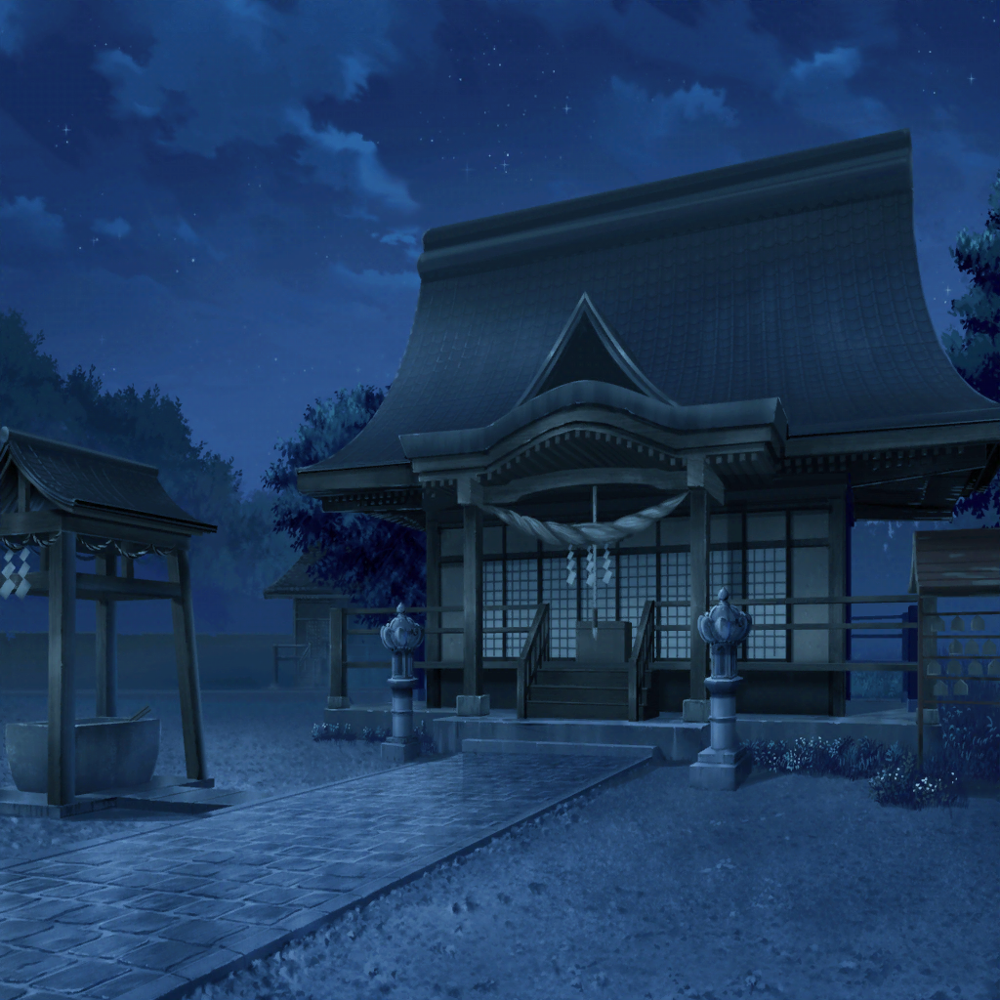
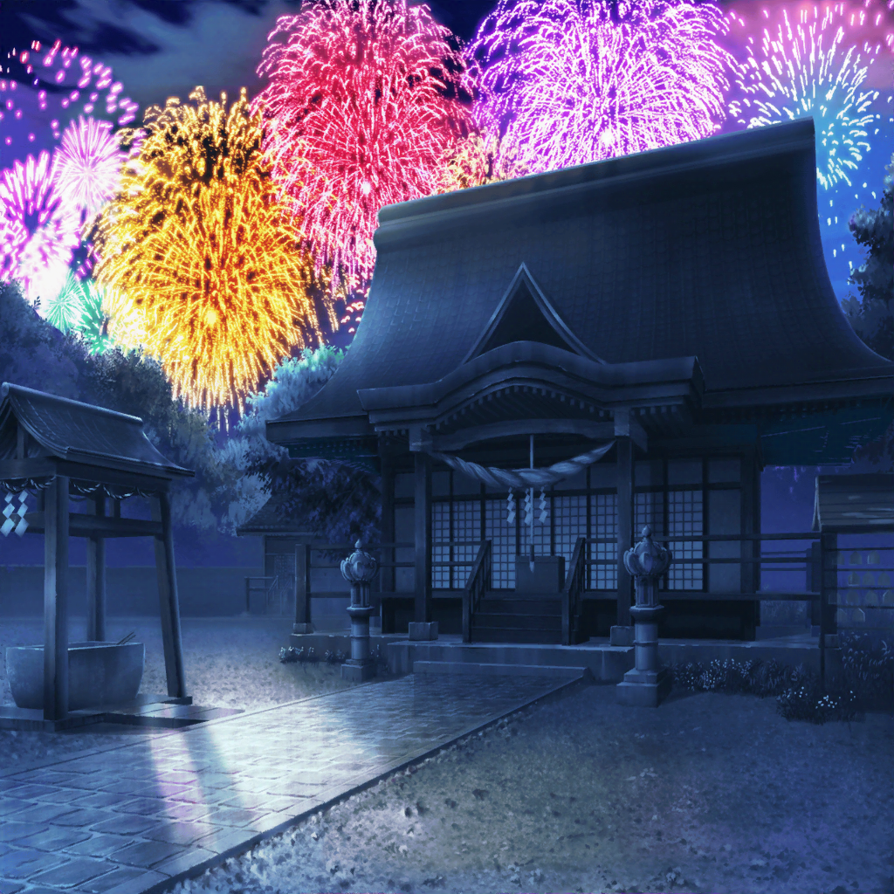

有咲の秘密の場所
有咲
あ～あ……
花火大会、始まっちゃったよ
有咲
つーか、みんな……
どこ行っちゃったんだよ……
有咲
…………私、ひとりじゃんか
有咲
まあ、別にそんなの気にならないし、
それでもいいけど！
有咲
……ったく、香澄はホントに勝手なことばっかりしやがって
有咲
あんな人混みに入ってたら、はぐれるに決まってるじゃん！
有咲
それに沙綾もおたえもいつの間にか、ついてきてねーし……
有咲
せっかくこの秘密の場所を、教えてやろうとしたのにさー
有咲
……ほら、この神社。
こんなに花火がキレイに見えるんだから……
有咲
………………
有咲
みんなで一緒に……見たかったな……
有咲
……私がこの場所のことを言わなければ、
今頃、みんなで一緒にいられたのかな……
有咲
（それか……この場所のこともったいぶらずに、
普通に教えてれば、みんな集まって来られたのか……）
有咲
（みんなを喜ばせたかったんだけど……
何やってんだろ、私って……）
有咲
（それにしても……
ここって、本当に静かだな……）
有咲
花火の音しか聞こえねーし……
有咲
毎年、来てたけど……
今年はよけいに静かに感じるかも……
有咲
あ～あ……
みんな今頃、何してるのかな……？

沙綾
はぁ、はぁ……坂道……結構、きつかったね……
おたえ、神社って、まだ着かない……？
たえ
この坂を上ったところだから、あとちょっと。
ほら、鳥居が見えてきた。
もうすぐそこだよ
沙綾
本当だ！
……よし、到着っと
沙綾
えっと、有咲は……
たえ
……いないね
沙綾
あちゃぁ……読みがはずれたか～
たえ
名探偵・沙綾、残念。
私も悲しい……
沙綾
う～ん、それじゃあ、有咲はどこに……
たえ
ん？ 花火大会、始まったみたい
たえ
あ……
沙綾
おたえ？ ちょっ、どこに行くの？？

たえ
……沙綾、向こう見て。
花火……すごいよ
沙綾
あ、本当だ！
わぁ、キレイ……
たえ
いつも見てる花火より大きく見えるけど……気のせい？
沙綾
たぶん周りが暗いからじゃないかな？
花火の光がよけいに明るく見えて、
それで大きく見えたりとか
たえ
あと、音もいつもより大きく感じる
沙綾
うん。遮るモノがないから、
直接、おなかにドンってくる感じだね
たえ
不思議……
花火が、ここにあるみたい。
なんか、さわれそうな感じする
沙綾
あはは、その感覚わかるかも……えっ！？
たえ
どうしたの？
沙綾
今、花火の光で、一瞬人影みたいなのが見えたんだけど……
たえ
あ。あれって……
有咲
……ん？
今、声が……
たえ
お～い、有咲～
沙綾
有咲！ 有咲がいたよっ！
有咲
お、おたえ！？ 沙綾！？
なんでここに……？
意味が全然わかんないっ
たえ
名探偵・沙綾の復活だね。
この神社で大正解
たえ
……あ、でも、この有咲は妖怪が化けた有咲かも
有咲
は、はぁっ！？
お前、何言ってくれちゃってんの！
有咲
奇跡の再会を果たしたと思ったら、
いきなり妖怪呼ばわりかよ！？
有咲
意味わかんねーっつーの！
沙綾
ふふ……ふふふ！
よかった。そのツッコミは、間違いなく有咲だね！
妖怪じゃない！
有咲
は、はぁ？ だから、どういうこと……？